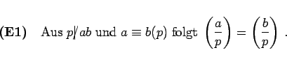
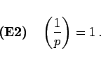
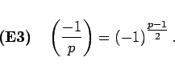
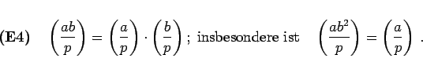
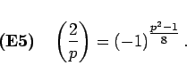
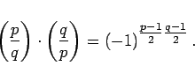
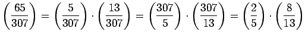

Inhalt Index DeskTop Bronstein

 Algebra und Diskrete Mathematik Elementare Zahlentheorie Kongruenzen und Restklassen Quadratische Kongruenzen
Algebra und Diskrete Mathematik Elementare Zahlentheorie Kongruenzen und Restklassen Quadratische Kongruenzen


Es gelten folgende Eigenschaften:
|  | (5.279a) |
|  | (5.279b) |
|  | (5.279c) |
|  | (5.279d) |
|  | (5.279e) |
(E6) Quadratisches Reziprozitätsgesetz: Sind p und q zwei verschiedene ungerade Primzahlen, dann gilt:
|  | (5.279f) |
| Beispiel |
|
 |